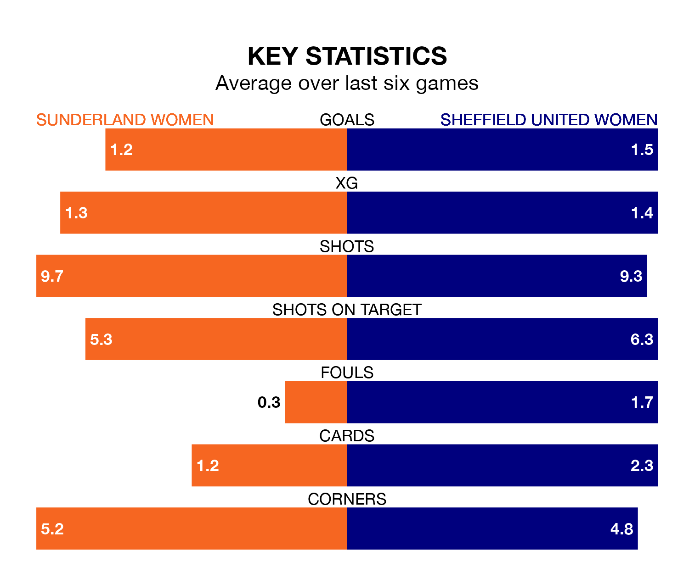

Sunderland Women host Sheffield United Women in Sunday's early match at Eppleton Colliery Football Ground looking to bounce back from defeat last time out in the FA Women's Championship.
Sunderland, who sit third in the league after 12 games, fell to a 3-0 home defeat to Birmingham City Women on December 17.
They face a Sheffield United side who secured a draw in their last match, a 2-2 tie with Charlton Athletic Women, and who sit eighth in the table.
In Claudia Moan, Sunderland can rely on one of the league's safest pair of hands. She has kept five clean sheets in her 12 appearances this season, and no 'keeper has prevented the opposition scoring more often in the FA Women's Championship.
In Sheffield United's net, Frances Stenson has one clean sheet in nine games. She has conceded a goal every 68 minutes, more than twice as often as the 154 minutes between goals for Moan.
In the last 10 years, Sunderland and Sheffield United have played each other on seven occasions. Sunderland won three of them, Sheffield United one, and they drew three times.
On average, Sunderland scored 2.0 goals and the Blades 1.6 in those matches.
Their last meeting was on October 11, when Sunderland won 3-2 away.
With 13 goals in 12 games so far this season, the home team are scoring at below the league average rate with 1.1 goals per game. But they are conceding fewer than average too, letting in nine goals at a rate of 0.8 per game.
The Blades, meanwhile, are average scorers, with 1.4 goals per game. They have conceded 1.5 goals per game.
Sunderland are in mixed form in the FA Women's Championship, with three wins and a draw from their last six games.
With two wins and a draw over that period, the visitors' form is worse – they have taken seven points from 18, compared to Sunderland's 10.
Updated: 10:02 (UTC), 19/01/24